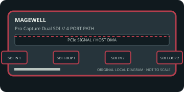

[ INDIVIDUAL COMPONENT // EXPANSION CARDS ]
Magewell Pro Capture Dual SDI
Two-channel PCIe SDI ingest with embedded audio and SDI loop-through. This static reference distinguishes documented card I/O from host software, codecs, and external signal paths.

IDENTIFICATION: Match the exact SKU, model marking, part number, board revision, bracket and connector layout to manufacturer documentation. Similar family names do not imply interchangeable ports, firmware or support.
Capture, playback and compatibility specifications
| Exact model / SKU | Pro Capture Dual SDI — verify the marking and revision on the physical card. |
|---|---|
| PCI/PCIe bus and lanes | PCI Express Gen 2 x4. Confirm the slot is electrically x4 or better and that other devices do not reduce available bandwidth. |
| Digital video inputs | Two BNC inputs accept supported SD/HD/3G-SDI and 2K signals with embedded audio; each channel has its associated SDI loop-through path per the card documentation. |
| Analog ports | No analog picture I/O; SDI BNC carries digital video. There is no composite/component output. |
| Input formats | SD/HD/3G-SDI up to supported 2K timings; actual raster, frame rate, bit depth and simultaneous-channel support follow the current model format table. |
| Output formats and connectors | Two SDI loop-through outputs pass incoming SDI to downstream equipment; they are not independently generated playback outputs. Captured frames are delivered to the host. |
| Encoding and driver model | Card processing handles capture and 10-bit pipeline features; it is not a media-file encoder. Host software selects containers/codecs and storage. |
| Operating-system compatibility | Magewell Pro Capture driver and SDK support Windows, Linux and macOS according to the release support matrix. Confirm firmware and application API compatibility before upgrading. |
| Software | Magewell Capture Express, SDK and supported third-party broadcast/capture software; loop-through configuration is separate from recording/encoding. |
| Power and cooling | PCIe slot powered; published short-form listing does not establish a universal maximum draw. Check the model manual for revision-specific power, cooling and multi-card host requirements. |
| Firmware caveat | Install only the firmware/driver package for Pro Capture Dual SDI and preserve a rollback path. Do not assume the configuration of the HDMI or 4K Plus models applies. |
Integration notes and limitations
- Check SDI level, cable equalization, reference, audio mapping and signal lock. Loop-through is a copy of the source signal, not an extra independent playback channel.
- Verify physical slot fit, PCIe lane wiring, BIOS/UEFI enumeration, host bandwidth and driver support together; a longer slot does not guarantee the electrical width the card needs.
- Record the board revision, firmware/driver versions, OS build, application, signal standard, source timing and tested pixel format as part of commissioning.
- Distinguish a video transport/pixel format from a compressed file codec. Unless the manufacturer explicitly states hardware encoding, codec creation and recording are host-application tasks.
Manufacturer sources and support
- Magewell — Pro Capture Dual SDI product specificationsManufacturer source; consult the exact model/revision and software-release notes before installation.
- Magewell — Pro Capture drivers, manuals and download centerManufacturer source; consult the exact model/revision and software-release notes before installation.
Product revisions, driver support and application integrations change over time; manufacturer documentation for the exact card takes precedence over generic family-level guidance.